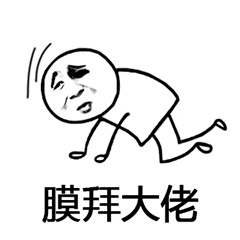

原文连接:https://www.cnblogs.com/yichunguo/p/11884535.html
目录
我们今天主要来谈谈“栈”以及队列这两种数据结构。
回顾一下上一章中【数据结构01】数组中，在数组中只要知道数据的下标，便可通过顺序搜索很快查询到数据，可以根据下标不同自由查找，然而今天要讲的“栈”以及队列这两种数据结构访问是受限制的，只允许在一端读取、插入和删除数据，这时候对它存在的意义产生了很大的疑惑。因为会觉得，相比数组和链表，栈带给我的只有限制，并没有任何优势。那我直接使用数组或者链表不就好了吗？为什么还要用这个“操作受限”的“栈”呢？事实上，从功能上来说，数组或链表确实可以替代栈，但你要知道，特定的数据结构是对特定场景的抽象，而且，数组或链表暴露了太多的操作接口，操作上的确灵活自由，但使用时就比较不可控，自然也就更容易出错。
@
1、理解栈与队列
首先，如何理解“栈”？用现实一个通俗贴切的例子，我们平时放盘子的时候，都是从下往上一个一个放；取的时候，我们是从上往下一个一个地依次取，不能从中间任意抽出，先进后出，这就是典型的“栈”结构,当某个数据集合只涉及在一端插入和删除数据，并且满足后进先出、先进后出的特性，我们就应该首选“栈”这种数据结构。
其次如何理解队列？同样用现实一个通俗贴切的例子，平时在校的时候饭堂吃饭都是排队，而且不能插队，先进先出，这就是典型的队列结构
2、用代码谈谈栈
实际上，栈既可以用数组来实现，也可以用链表来实现。用数组实现的栈，我们叫作顺序栈，用链表实现的栈，我们叫作链式栈。不管是顺序栈还是链式栈，我们存储数据只需要一个大小为n的数组就够了。在入栈和出栈过程中，只需要一两个临时变量存储空间，所以空间复杂度是O(1)。
注意，这里存储数据需要一个大小为n的数组，并不是说空间复杂度就是O(n)。因为，这n个空间是必须的，无法省掉。所以我们说空间复杂度的时候，是指除了原本的数据存储空间外，算法运行还需要额外的存储空间。
空间复杂度分析是不是很简单？时间复杂度也不难。不管是顺序栈还是链式栈，入栈、出栈只涉及栈顶个别数据的操作，所以时间复杂度都是O(1)。
还有一点，JVM内存管理中有个“堆栈”的概念。栈内存用来存储局部变量和方法调用，堆内存用来存储Java中的对象。那JVM里面的“栈”跟我们这里说的“栈”是不是一回事呢？如果不是，那它为什么又叫作“栈”呢？知道的大牛请自觉评论区见面~
2.1、用数组实现的栈：顺序栈
public class MyStack {
//栈的底层我们使用数组来存储数据
int[] elements;
public MyStack() {
elements = new int[0];
}
//压入元素
public void push(int element) {
// 创建一个新的数组
int[] newArr = new int[elements.length + 1];
// 把原数组中的元素复制到新数组中
for (int i = 0; i < elements.length; i++) {
newArr[i] = elements[i];
}
// 把添加的元素放入新数组中
newArr[elements.length] = element;
// 使用新数组替换旧数组
elements = newArr;
}
//取出栈顶元素
public int pop() {
//栈中没有元素
if(elements.length==0) {
throw new RuntimeException("stack is empty");
}
//取出数组的最后一个元素
int element = elements[elements.length-1];
//创建一个新的数组
int[] newArr = new int[elements.length-1];
//原数组中除了最后一个元素的其它元素都放入新的数组中
for(int i=0;i<elements.length-1;i++) {
newArr[i]=elements[i];
}
//替换数组
elements=newArr;
//返回栈顶元素
return element;
}
//查看栈顶元素
public int peek() {
//栈中没有元素
if(elements.length==0) {
throw new RuntimeException("stack is empty");
}
return elements[elements.length-1];
}
//判断栈是否为空
public boolean isEmpty() {
return elements.length==0;
}
}
2.2、测试数组实现的栈
import demo2.MyStack;
public class TestMyStack {
public static void main(String[] args) {
//创建一个栈
MyStack ms = new MyStack();
//压入数组
ms.push(9);
ms.push(8);
ms.push(7);
//最出栈顶元素
System.out.println(ms.pop());
System.out.println(ms.pop());
System.out.println(ms.pop());
//查看栈顶元素
// System.out.println(ms.peek());
System.out.println(ms.isEmpty());
}
}
2.3、基于链表实现的栈：链式栈
package stack;
/**
* 基于链表实现的栈。
*/
public class StackBasedOnLinkedList {
private Node top = null;
public void push(int value) {
Node newNode = new Node(value, null);
// 判断是否栈空
if (top == null) {
top = newNode;
} else {
newNode.next = top;
top = newNode;
}
}
/**
* 我用-1表示栈中没有数据。
*/
public int pop() {
if (top == null) return -1;
int value = top.data;
top = top.next;
return value;
}
public void printAll() {
Node p = top;
while (p != null) {
System.out.print(p.data + " ");
p = p.next;
}
System.out.println();
}
private static class Node {
private int data;
private Node next;
public Node(int data, Node next) {
this.data = data;
this.next = next;
}
public int getData() {
return data;
}
}
}3、用代码谈谈队列
栈只支持两个基本操作：入栈push()和出栈pop()。队列跟栈非常相似，支持的操作也很有限，最基本的操作也是两个：入队enqueue()，放一个数据到队列尾部；出队dequeue()，从队列头部取一个元素。所以，队列跟栈一样，也是一种操作受限的线性表数据结构。队列的概念很好理解，基本操作也很容易掌握。作为一种非常基础的数据结构，队列的应用也非常广泛，特别是一些具有某些额外特性的队列，比如循环队列、阻塞队列、并发队列。它们在很多偏底层系统、框架、中间件的开发中，起着关键性的作用。比如高性能队列Disruptor、Linux环形缓存，都用到了循环并发队列；Java concurrent并发包利用ArrayBlockingQueue来实现公平锁等。
跟栈一样，队列可以用数组来实现，也可以用链表来实现。用数组实现的栈叫作顺序栈，用链表实现的栈叫作链式栈。同样，用数组实现的队列叫作顺序队列，用链表实现的队列叫作链式队列
3.1、数组实现队列：顺序队列
package queue;
// 用数组实现的队列
public class ArrayQueue {
// 数组：items，数组大小：n
private String[] items;
private int n = 0;
// head表示队头下标，tail表示队尾下标
private int head = 0;
private int tail = 0;
// 申请一个大小为capacity的数组
public ArrayQueue(int capacity) {
items = new String[capacity];
n = capacity;
}
// 入队
public boolean enqueue(String item) {
// 如果tail == n 表示队列已经满了
if (tail == n) return false;
items[tail] = item;
++tail;
return true;
}
// 出队
public String dequeue() {
// 如果head == tail 表示队列为空
if (head == tail) return null;
// 为了让其他语言的同学看的更加明确，把--操作放到单独一行来写了
String ret = items[head];
++head;
return ret;
}
public void printAll() {
for (int i = head; i < tail; ++i) {
System.out.print(items[i] + " ");
}
System.out.println();
}
}3.2、链表实现的队列：链式队列
package queue;
/**
* 基于链表实现的队列
*/
public class QueueBasedOnLinkedList {
// 队列的队首和队尾
private Node head = null;
private Node tail = null;
// 入队
public void enqueue(String value) {
if (tail == null) {
Node newNode = new Node(value, null);
head = newNode;
tail = newNode;
} else {
tail.next = new Node(value, null);
tail = tail.next;
}
}
// 出队
public String dequeue() {
if (head == null) return null;
String value = head.data;
head = head.next;
if (head == null) {
tail = null;
}
return value;
}
public void printAll() {
Node p = head;
while (p != null) {
System.out.print(p.data + " ");
p = p.next;
}
System.out.println();
}
private static class Node {
private String data;
private Node next;
public Node(String data, Node next) {
this.data = data;
this.next = next;
}
public String getData() {
return data;
}
}
}3.2、循环队列
用数组来实现队列的时候会有数据搬移操作，这样入队操作性能就会受到影响。那有没有办法能够避免数据搬移呢？我们来看看循环队列的解决思路。
循环队列，顾名思义，它长得像一个环。原本数组是有头有尾的，是一条直线。现在我们把首尾相连，扳成了一个环。
package queue;
public class CircularQueue {
// 数组：items，数组大小：n
private String[] items;
private int n = 0;
// head表示队头下标，tail表示队尾下标
private int head = 0;
private int tail = 0;
// 申请一个大小为capacity的数组
public CircularQueue(int capacity) {
items = new String[capacity];
n = capacity;
}
// 入队
public boolean enqueue(String item) {
// 队列满了
if ((tail + 1) % n == head) return false;
items[tail] = item;
tail = (tail + 1) % n;
return true;
}
// 出队
public String dequeue() {
// 如果head == tail 表示队列为空
if (head == tail) return null;
String ret = items[head];
head = (head + 1) % n;
return ret;
}
public void printAll() {
if (0 == n) return;
for (int i = head; i % n != tail; ++i) {
System.out.print(items[i] + " ");
}
System.out.println();
}
}好了，到这里，总结一下队列，队列最大的特点就是先进先出，主要的两个操作是入队和出队。跟栈一样，它既可以用数组来实现，也可以用链表来实现。用数组实现的叫顺序队列，用链表实现的叫链式队列。特别是长得像一个环的循环队列。在数组实现队列的时候，会有数据搬移操作，要想解决数据搬移的问题，我们就需要像环一样的循环队列。
如果本文章对你有帮助，哪怕是一点点，请点个赞呗，谢谢~
欢迎各位关注我的公众号，一起探讨技术，向往技术，追求技术...说好了来了就是盆友喔...